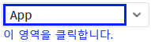
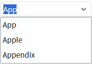
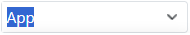

속성 'hideListOnFocus' 설정 값 비교 예제입니다. 이 속성은 편집 모드로 진입 시 목록의 표시 여부를 설정할 수 있습니다. 편집 모드에서 입력 필드에 키가 입력되면 목록이 표시됩니다. 표시되는 목록은 입력된 값으로 필터가 적용된 항목입니다.
편집 모드 진입 시 목록 표시하기
편집 모드 진입 시 목록 표시하지 않기
STEP 1. 편집 모드로 변경합니다.
영역 [(기본 설정) 목록 표시]에 구성된 예제를 확인합니다.'AutoComplete'의 우측에 구성된 버튼을 제외한 영역을 클릭합니다. 버튼을 클릭하면 목록이 표시됩니다.
그림 1.브라우저(Chrome) 실행 예시

STEP 2. 실행 결과를 확인합니다.
편집 모드로 전환되며, 입력 필드에 입력된 값으로 필터되어 목록이 표시됩니다.
그림 2.브라우저(Chrome) 실행 예시

STEP 1. 편집 모드로 변경합니다.
영역 [목록 미표시]에 구성된 예제를 확인합니다.'AutoComplete'의 우측에 구성된 버튼을 제외한 영역을 클릭합니다. 버튼을 클릭하면 목록이 표시됩니다.
그림 3.브라우저(Chrome) 실행 예시
STEP 2. 실행 결과를 확인합니다.
편집 모드로 전환되며, 목록이 표시되지 않습니다.
그림 4.브라우저(Chrome) 실행 예시

속성을 정의합니다.
[필수] hideListOnFocus
편집 모드 진입 시 목록 표시 여부를 지정합니다.
제시된 옵션 값으로 설정합니다.
(옵션 값)
- "false" : [default] 입력 필드의 값과 매칭되는 목록이 표시됩니다.
- "true" : 목록이 표시되지 않습니다.
hideListOnFocus